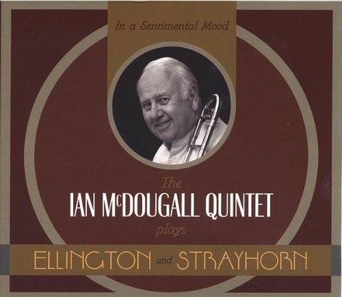
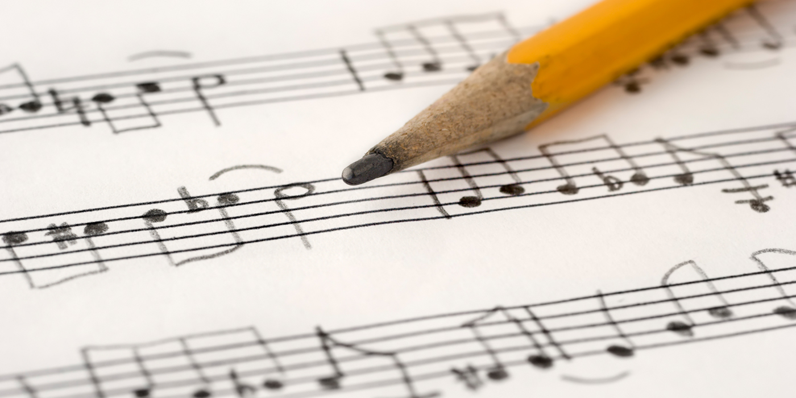
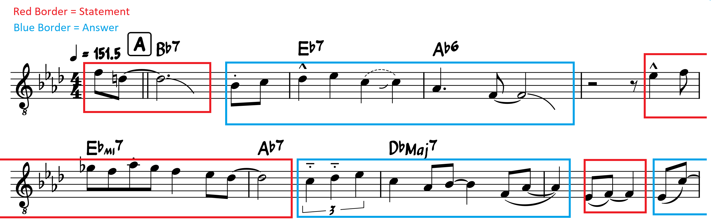

Lifting a Solo: The Ultimate Jazz Workout
by Nicholas Wise
The process of learning a solo (commonly referred to as “lifting” a solo) is the ultimate jazz workout for anybody studying this music. Lifting a solo develops your phrasing, articulation, tone, time and sense of rhythm, improvisational vocabulary and melodicism, and ears.
Essentially, learning how to play jazz is like learning a language. At a young age, you learn how to speak by listening to your parents and those around you speaking the language. Eventually you begin to use words and phrases you hear and slowly incorporate them into your knowledge of the vocabulary and grammar. Of course, just like in music, becoming truly fluent involves studying language more thoughtfully than hearing and repeating phrases until you get it. You have to learn how to read and use proper grammar and phrasing. When you attempt to play and improvise jazz without listening to and assimilating music from the greats, it is like trying to speak a language you haven’t heard. This guide will teach you the procedure to lifting a solo and how to effectively incorporate it into your own musicality.
Phase 1: Listening
Before you even begin playing or transcribing (writing down) a solo, you need to listen to it. Try to get to the point where you can sing along to the recording (if it’s a longer solo you can try working on shorter segments of it). If you can sing along to it, try listening to specific aspects on different listens like the articulation, tone, and dynamics. To the right side of this lesson I have put part of a solo as an example that you can follow along with. This is by the amazing Canadian trombonist Ian MgDougall.
Ian McDougall on "In a Mellow Tone"
Try following the steps of phase 1. Try and make observations like "how swung are his 8th notes?" Something to think about is how Ian phrases his melodic lines like a converstion (statement and response).
Phase 2: Translating
There a multiple different ways to go about this step, but the main goal is to translate the solo you listened to into your own playing and most importantly: to memorize it. We will discuss the two most beneficial methods to going about this:
-  The first method is transcription: This involves writing down the solo into notated music. A written out piece of music that depicts a recorded piece of music is called a transcription. For example, most of the lead sheets you will find in popular real books are transcriptions of notable recorded versions of those tunes. This shows that transcribing can also be good practice for those studying arranging and composition due to the process of figuring out and then correlating specific chords or voicings with the sound they produce. How you would do this is either with staff paper or a musical notation software. A great free software you can use is MuseScore. The challenge with this method of translating a solo is turning it into meaningful practice. It is a challenge to figure out the notes on your own so you may develop a habit of checking each and every individual note with a piano or other instrument, and while it is a great tool to use, it would be better to use once and a while to see if you are on the right track. For example: Try to to guess two or three notes in a row before checking with an instrument or playback software; if this becomes easy, raise the bar and only check every bar or prase and so on. It may be surprising but even without perfect pitch, many people with a practiced ear can transcribe an entire solo without using an instrument after the first reference note -- people that can do this have good relative pitch. The most important part is the notes, but you can add important articulations or stylistic effects like growl or large vibrato (if it's in the solo) if you really want to. Next you want to be able to play the solo you have written out. When you are learning it on your own instrument, even when reading it, you want to play along to the recording. The goal is to match every aspect of the solo with your own playing. Tone, phrasing, time, and all the other musical elements that make a good solo that are just as important as the notes they play. The next and most important part is memorizing it. If you don't memorize the solo then you haven't really learned it well enough for your playing and improvisation to benifit from it.
- The second method is learning it by ear directly to your instrument. This skips the transcription step and goes directly to learning to play it on your instrument. You can use many of the techniques from the first method here as well. For example: you can learn one phrase at a time. The benifit of this methood is that you are training your ability to play what you hear. For example: if you hear a lick that you want to play during a solo, then having a direct line from your ear to your instrument allows you to be able to play it much quicker and more consistently than someone who doesn't know how to translate what they hear in their head into physical inputs on their instrument. Another benifit to this method is that it forces you to memorize it since you don't have sheet music to rely on. Many people that use this method may also decide to write it down after learning it, which becomes much easier since they have already done the work of memorizing it. The benifit of writing it down even after learning it is that it's easier to analyse and look deeper into certain things (like melody in relation to harmony) when it is in a digestable visual medium. This helps with the next phase.
Of course, these aren't strict directions everyone needs to follow, but merely suggestions on methods that work for most. You may find that you prefer one or the other, or a mix of both. Also I know that there are already many transcriptions already available online as well as in books like the "Omnibook" series; and while some may call it cheating to use someone elses transcription, I believe that it can be its own method of retrieving musical information, as long as the person using them still pays important attention to the recording and listening and recognizes that they should not rely only on these materials.
You can try one or both of these methods with the solo example from the previous phase.
Phase 3: Analyzing and Incorporating
In order to truly get the most out of a solo that you learn, you need to give more thought to specific elements in the solo. It's helpful to have a transcription handy for this phase. An important element to include in your transcription is the chord symbols of the tune's harmonic progression (we call these chord changes). Many jazz solos are over well known jazz standards that may already have changes online or in lead sheets that you can use (just remember to take these with a grain of salt since not all recordings of the same standard strictly use the same exact set of changes; when in doubt use your ear). Chord changes provide context to what is being played. This means that when you know the context in which a melodic line (or lick) works, you can implement it over that type of progression or chord in your own improvisation. Take the last few seconds of the solo excerpt from phase 1 as an example:
I have analyzed the scale degrees of this Lick and I have also recognized that it works over a C7b9 chord as well as the original Eb7. Since I have worked on this lick in all 12 keys in both harmonic contexts, I can now apply it over almost any V-I or bVII-I chord I come across in my own solos.
Other things you can consider is the lengths of phrases, how they connect to the next part, or how and where the soloist uses elements like dynamics, time, and articulation to alter the intensity or build up to the next section (for example: the crescendo in the last bar of the example above builds excitement and signals the next half of the form as well as a totally new idea). In the example below, I have noticed that the first 8 bars follow a statement and answer pattern which makes the solo sound alive and converstion-like.
Try improvising a few choruses over "In a Mellow Tone" with a backing track (if you do not know the chord changes you can look at the pdfs below). While doing this, try and imitate Ian McDougall's statement and response style of melodic playing. You can also try this on other tunes as well. Try incorporating other elements that I haven't pointed out as well, like his sense of swing and phrasing.
Thank you for following up to the end and I hope you have gained some insight into the process of working on a Lift. Below I have linked my transcription of the trombone solo we used (full recording here). I recommend trying all you have learned from this lesson on the second half of the solo. Have fun with it!

Nicholas Wise & Dave Pagdonsolan | 2022